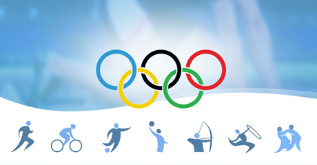
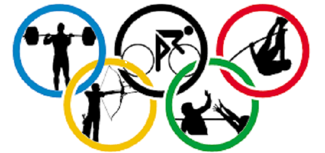

Juegos Olímpicos de Verano
Los Juegos Olímpicos de Verano se organizan cada cuatro años bajo la supervisión del Comité Olímpico Internacional. Su primera edición fue en Atenas 1896, y reúne cerca de 10.000 cantidad de deportistas de todos los países, Los siguientes disciplinas deportivas constituyen el programa actual de los Juegos Olímpicos de Verano:
- Fortaleza y Agilidad
- atletismo, gimnasia, halterofilia.
- Velocidad
- atletismo, ciclismo, natación, piragüismo, remo, triatlón, vela.
- Pelota
- bádminton, baloncesto, balonmano, fútbol, golf, hockey sobre hierba, rugby, tenis, tenis de mesa, voleibol, waterpolo.
- Habilidad
- equitación, natación sincronizada, pentatlón moderno, salto, tiro con arco, tiro deportivo.
- Artes marciales
- boxeo, esgrima, lucha, judo, taekwondo.


